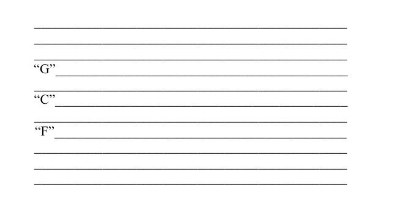
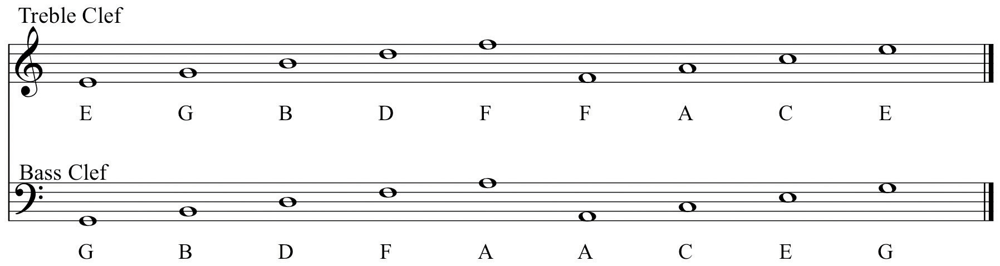
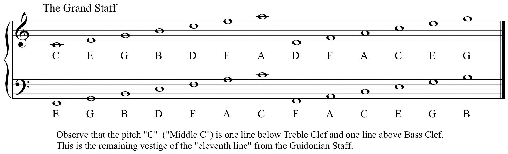
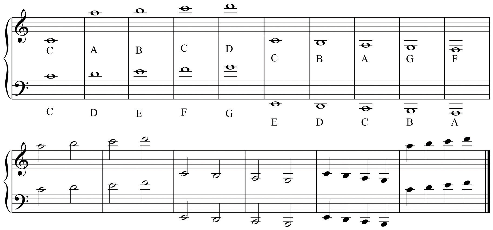
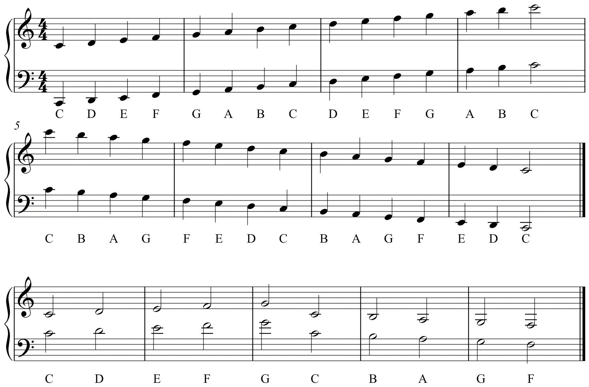
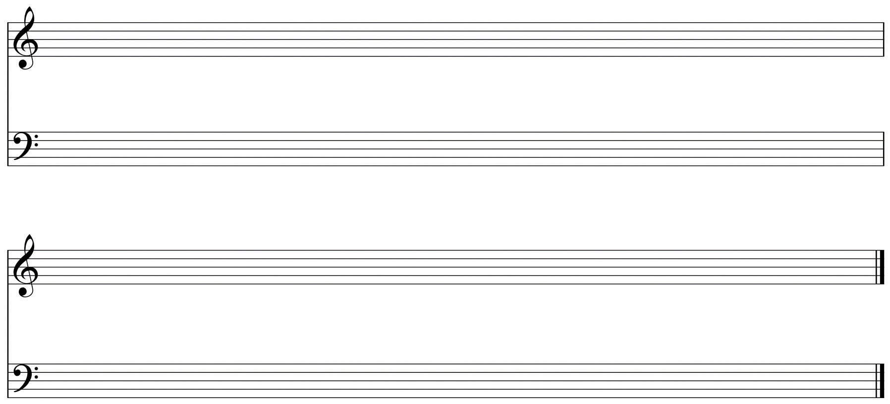
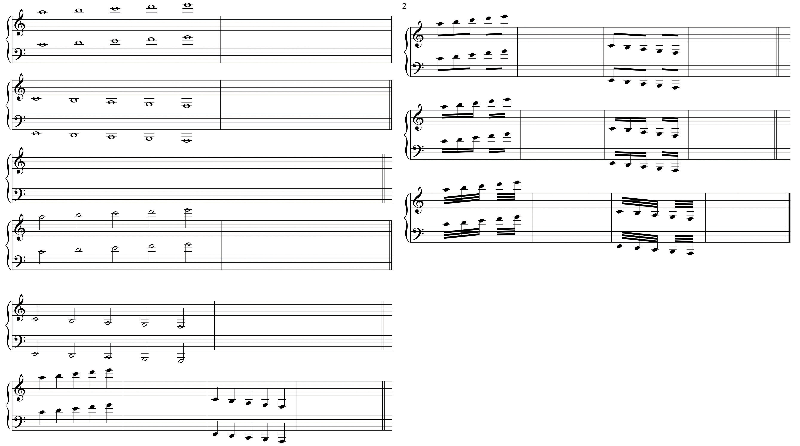

PitchPitch is relative highess or lowness of sound. Individual pitches are specifically located and notated on the staff. is defined as the relative highness or lowness of sound. This is a general definition: in music we speak of pitch as a specific tone that is specifically placed and notated. Pitch-classPitch-classes are all those pitches which share the same letter name, or share the same “pitch-space” but have different spellings., a relatively recent term, describes a generalized or generic relationship of pitches that sound essentially identical but are separated by a sense of highness or lowness. Pitch-class also refers to tones that share the same “pitch-space,” that is, they sound identical, but are “spelled” differently.
Since early notation was not specific as to exact placement of pitch, a system of parallel horizontal lines came into use in order to show exact placement.Interestingly, earlier systems of notation employing parallel lines had been in use. Many used only the lines themselves to locate pitch, not the spaces between. This staffThe Staff (or staves) is a system of parallel lines used to locate and notate specific pitches. originated as a system of eleven parallel lines that encompassed the theoretical span of available pitches, which was the range of the male voice from Bass to male Soprano.In St. Paul’s Epistle to the Corinthians he delivers an injunction to “Let your women keep silence in the Church…” This became the rationale for the exclusion of women from participation in the early church. In practice, this complete system was limited to four or five parallel lines encompassing the range of a given chant melody or voice part.
Figure 2.1 The Guidonian Staff
Pitches were assigned specific names. The lowest pitch, called gamma, extended to the highest pitch, ut: the contraction of these two terms, gamut, has entered the language to mean “a complete range or scope.”
The eleven-line system is visually cumbersome. In early music specific lines were colored with different dyes, each line locating a specific pitch. All other pitches were held in relation to these. In time, the eleven-line staff was separated into two five-line staves. The remaining line between the two staves was not drawn, but was understood as being “shared” by each staff.
Specific symbols came into use, replacing the colored lines. Clefs (French-“key”) served the same purpose as colored lines, locating exact pitches around which all other pitches were calculated. These clefs represented general voice ranges and their names reflect this.
We label pitch-classes by the use of letter-names. Other labels are discussed in Section 2.2 "Chromatic Alteration: Accidentals". The Treble Clef (or “G-clef”), nominally indicating a high voice, locates the pitch “G” on the second line up on the staff.
The Bass Clef (or “F-clef”) locates the pitch “F” on the fourth line up on the staff. From these two fixed points, all other pitches were calculated and placed on the five-line staff. Figure 2.2 "Treble Clef and Staff; Bass Clef and Staff" shows the Treble and Bass Clefs and pitch placement on lines and spaces.
Figure 2.2 Treble Clef and Staff; Bass Clef and Staff
These two staves are combined into a systemA staff or collection of staves grouped together. It may also refer to one complete line of music. called The Grand StaffA system of two five-line staves used to locate and notate pitch. This evolved from the early eleven-line staff..In notation we call complete lines of music a system. This reflects its origins from the Guidonian staff: two five-line staves, slightly separated, the remaining invisible middle line shared by both. The Grand Staff now yields the potential for locating and notating all pitches, from lowest to highest.
Figure 2.3 The Grand Staff
In Figure 2.3 "The Grand Staff" pitches are listed just outside the boundaries of each clef on the Grand Staff. Since the two staves (Treble and Bass) are separated from one another in the Grand Staff, it is necessary to use symbols to extend each beyond its five-line boundaries.
Short horizontal dashes are used to extend the range of either staff, above or below. These dashes, called ledger linesLedger lines are small horizontal dashes above, below, or through a notehead used to extend the range of the staff., serve as truncated staff lines. They may occur above or below a notehead, or they may bisect a notehead.
Figure 2.4 Ledger Lines
The student should exercise particular care when drawing ledger lines. A common mistake of nascent music students is placing the ledger line on the wrong side of the notehead. When drawing notes observe several other properties:
Using these notational devices and practices, exact pitch placement can be shown. Note that the pitch that is one ledger line above Bass Clef is identical to the pitch that is one ledger line below Treble Clef (both are “Middle C”). This shared, connective pitch is reminiscent of the middle line from the Guidonian staff and serves to connect the two staves.
Figure 2.5 Pitch Placement on the Grand Staff
Observe the Grand Staff. Note that pitches of the same letter name occur throughout the system. Individual tones are specifically recognized as such. Pitches having the same letter name but separated by range are recognized as pitch-classes. Therefore the note one ledger line below the Treble Staff is designated as the pitch “C” (or “Middle C”), but all notes so labeled constitute the pitch-class “C.”
Also, observe that ledger lines extending notes below Treble Clef may be written in Bass Clef. Similarly, ledger lines extending notes above Bass Clef may be written in Treble Clef. At times, it is more appropriate to write pitches using ledger lines, rather than switching to another staff and clef. Exercise caution when writing or labeling pitches that cross over “between” the staves.
On the example provided, practice drawing Treble and Bass Clefs.
Figure 2.6 Clef Samples
On the example provided, practice drawing notes above and below the staves using ledger lines.
Figure 2.7 Ledger Lines Samples
